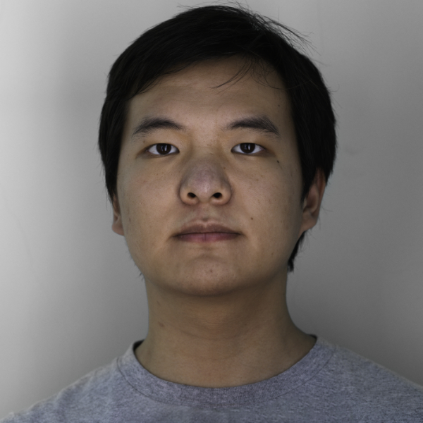

Heming Wang
Graduate Student
Northwestern University
I am a master's student at Northwestern universiy. I graduated from University of Illinois Urbana-Champaign majoring in electrical engineering, and received my Bachelor of Science degree there in 2019.
Currently, I am working with Dr. Florian Willomitzer in the Computational Photography Lab at Northwestern. My main focus is to help developing innovative 3D imaging techniques that can see qround corners or through scattering media.
Link to my resumeInterests
- Computational Photography
- VR/AR/MR
- Signal Processing
- Digital Audio and Synthesizers
Education
-
M.S. in Electrical Engineering, in progress
Northwestern University
-
B.S. in Electrical Engineering, 2019
University of Illinois Urbana-Champaign